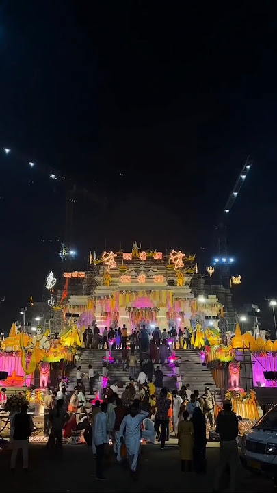
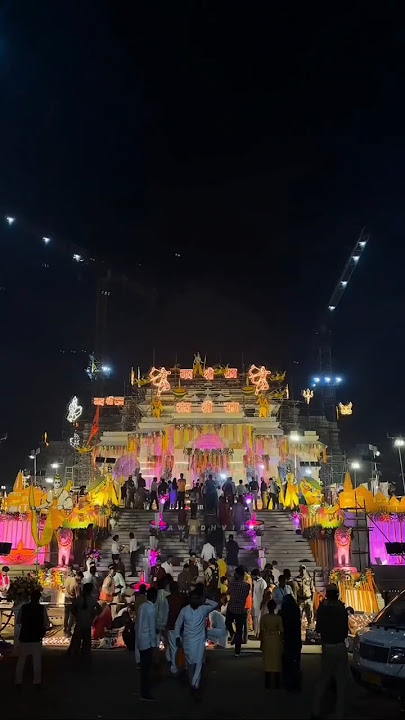

About
राम मंदिर का मूल डिज़ाइन 1988 में अहमदाबाद के सोमपुरा परिवार द्वारा तैयार किया गया था। सोमपुरा ने कम से कम 15 पीढ़ियों से दुनिया भर में 100 से अधिक मंदिरों के डिजाइन में योगदान दिया है, जिसमें सोमनाथ मंदिर भी शामिल है। मंदिर के मुख्य वास्तुकार चंद्रकांत सोमपुरा थे, उनकी सहायता उनके दो बेटे, निखिल सोमपुरा और आशीष सोमपुरा ने की, जो वास्तुकार भी हैं। मूल से कुछ बदलावों के साथ एक नया डिज़ाइन, 2020 में सोमपुरा द्वारा तैयार किया गया था, हिंदू ग्रंथों, वास्तु शास्त्र और शिल्पा शास्त्रों के अनुसार। मंदिर 250 फीट चौड़ा, 380 फीट लंबा और 161 फीट (49 मी॰) होगा ऊँचा। एक बार पूरा होने पर, मंदिर परिसर दुनिया का तीसरा सबसे बड़ा हिंदू मंदिर होगा। इसे नागर शैली की वास्तुकला की गुर्जर - चालुक्य शैली में डिज़ाइन किया गया है, जो एक प्रकार की हिंदू मंदिर वास्तुकला है जो मुख्य रूप से उत्तरी भारत में पाई जाती है। प्रस्तावित मंदिर का एक मॉडल 2019 में प्रयाग कुंभ मेले के दौरान प्रदर्शित किया गया था। मंदिर की मुख्य संरचना तीन मंजिला ऊंचे चबूतरे पर बनाई जाएगी। इसमें गर्भगृह के मध्य में और प्रवेश द्वार पर पांच मंडप होंगे । एक तरफ तीन मंडप कुडु, नृत्य और रंग के होंगे, और दूसरी तरफ के दो मंडप कीर्तन और प्रार्थना के होंगे। नागर शैली में मंडपों को शिखरों से सजाया जाता है।

 
